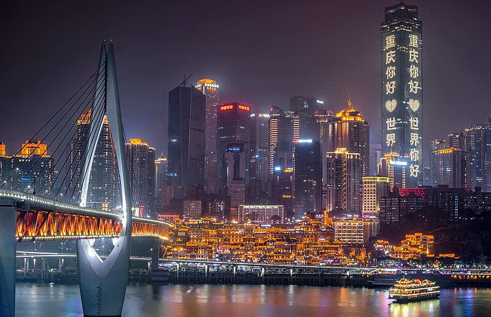

Place I Want to Go
Chongqing

Why I Want to Visit
Known as the “Cyberpunk City,” Chongqing is home to some of the most spectacular views in China, with natural landscapes along with impressive architecture, such as trains literally going through buildings. Take the Yangtze River Cableway, where a ride across the river unveils views of the city’s buildings and waterways. Not only that, but Chongqing’s cultural heritage is rich, with historic sites like the Dazu Rock Carvings, a UNESCO World Heritage site that dates back to the 7th century. Chongqing is also famous for its spicy hotpot. With a mix of culture, adventure, and architecture, Chongqing is the perfect destination for anyone looking to experience both ancient and modern China.
Chongqing’s attractions are nothing short of spectacular, with the city’s ancient history and its modern landscapes. One of the city’s most interesting attractions is the Dazu Rock Carvings, a UNESCO World Heritage site dating back to the 7th century, where stone carvings depict stories and different spiritual beliefs. In the city lies Jiefangbei Square, a bustling commercial center surrounded by skyscrapers and unique shops. For more historical attractions, there is Ciqikou Ancient Town. The town provides an authentic experience of Chongqing’s culture and heritage, with narrow streets, traditional teahouses, and local markets. The Yangtze River Cableway, often called the “First Air Corridor of the Yangtze River,” gives visitors an aerial view of the city’s skyline and river.